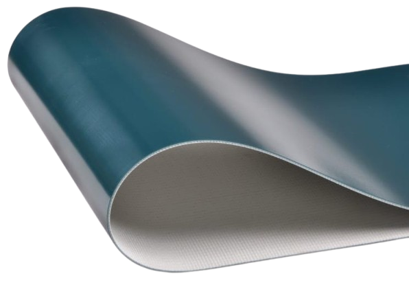
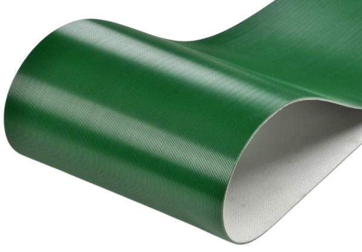
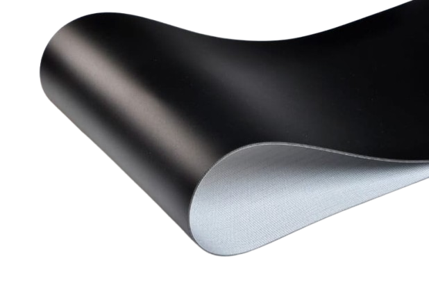
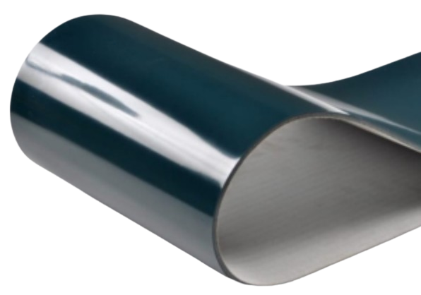
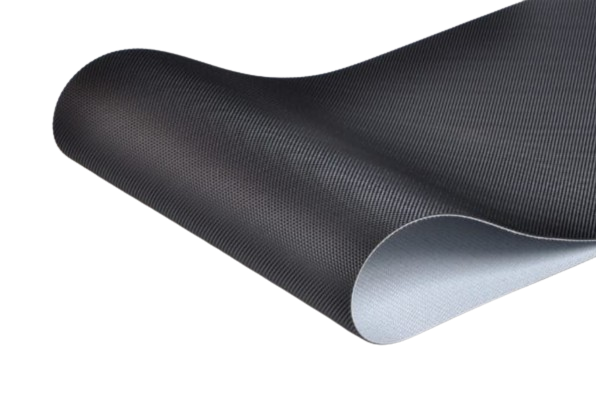
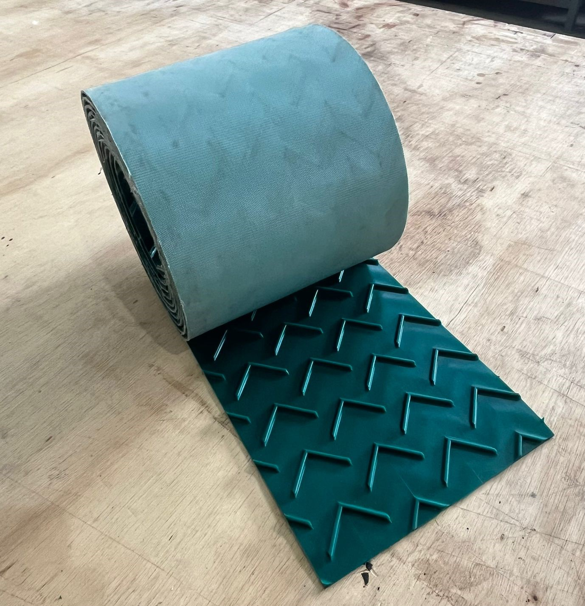

Produtos
Confira um pouco mais dos nossos produtos e serviços de alta qualidade.

Correia PVC verde 2 lonas

Correia PVC rasqueada

Correia PVC Azul

Correia PVC preta

Correia PVC verde 3 lonas

Correia PVC preta 2mm com Impressão Negativa

Correia com talisca